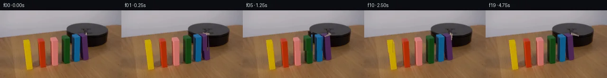

![首帧]()

Round 00
2026-11-05T06:19:16.948725+00:00像素候选变化代码 +473/−0inspection 更新
pixels 2b8142fc81065cbd · code c8dcdfecea7968b3
查看本轮 generate.py 真实 diff
--- previous/generate.py
+++ current/generate.py
@@ -0,0 +1,473 @@
+#!/usr/bin/env python3
+"""PixelWorld-Text: Animate a stick rotating clockwise from a black platform
+and hitting a row of colorful wooden blocks on a wooden table.
+
+Method: Extract scene elements from first_frame.png using pixel measurements,
+then animate via coordinate transforms, copy-paste patch shifting, localized
+inpainting for background fill, and rotation-blended compositing for the stick.
+All operations are local Python/NumPy pixel math. No external models or engines."""
+
+import numpy as np
+from PIL import Image
+from pathlib import Path
+import math, sys
+
+# ── helpers ──────────────────────────────────────────────────────────────
+def lerp(a, b, t):
+ return a + (b - a) * t
+
+def clamp(v, lo, hi):
+ return max(lo, min(hi, v))
+
+def blend_over(bg, fg, alpha):
+ """Alpha-blend fg onto bg. Both (H,W,3) float64, alpha (H,W) float in [0,1]."""
+ return bg * (1 - alpha[..., None]) + fg * alpha[..., None]
+
+def save_png(path, arr):
+ Image.fromarray(np.clip(arr, 0, 255).astype(np.uint8)).save(path)
+
+# ── load frame 00 ────────────────────────────────────────────────────────
+case_dir = Path(__file__).resolve().parent
+frame00 = np.array(Image.open(case_dir / "first_frame.png")).astype(np.float64)
+H, W = frame00.shape[:2]
+assert (H, W) == (144, 256), f"Expected 144×256, got {H}×{W}"
+
+# ── scene geometry (measured from first_frame.png pixel inspection) ──────
+
+# Pivot = where stick attaches to black platform edge
+PIVOT = (184.0, 50.0)
+
+# Stick: thin wooden strip. Visible in frame00 at ~(181-182, 48-51).
+# From pivot to tip: about 3px left, 1px up.
+STICK_LENGTH = 4.0 # pixels from pivot to tip
+STICK_THICKNESS = 2.0 # pixels
+
+# Initial stick angle (radians). In image coords (y-down):
+# atan2(dy, dx) where dx=181-184=-3, dy=49-50=-1
+# = atan2(-1, -3) ≈ -2.82 rad (or equivalently pi + atan2(1,3) ≈ 3.46 rad)
+# Measured more directly: the stick points up-left from pivot.
+INITIAL_ANGLE = math.atan2(-1.0, -3.0) # ≈ -2.82 rad
+
+# End angle after rotating clockwise (in image coords, clockwise = angle increases
+# toward pi/2, then pi, etc.). We want it to sweep past the purple block.
+# Target: sweep through ~ 90 degrees clockwise → angle goes from INITIAL_ANGLE
+# to INITIAL_ANGLE + PI/2 = ~ -1.25 rad (pointing down-left, roughly 7 o'clock)
+FINAL_ANGLE = INITIAL_ANGLE + math.pi * 0.55 # ~ 100° sweep
+
+# Block definitions: (name, x_left, x_right, color_center)
+BLOCKS = [
+ {"name": "Yellow", "x0": 49, "x1": 61, "y0": 52, "y1": 90, "hit_order": 6},
+ {"name": "Red", "x0": 83, "x1": 92, "y0": 48, "y1": 88, "hit_order": 5},
+ {"name": "Pink", "x0": 111, "x1": 121, "y0": 45, "y1": 86, "hit_order": 4},
+ {"name": "Green", "x0": 131, "x1": 147, "y0": 44, "y1": 86, "hit_order": 3},
+ {"name": "Blue", "x0": 157, "x1": 168, "y0": 44, "y1": 86, "hit_order": 2},
+ {"name": "Purple", "x0": 173, "x1": 183, "y0": 44, "y1": 86, "hit_order": 1},
+]
+
+# ── build clean background plate (inpaint out the stick) ─────────────────
+# The stick occupies a small region. We replace those pixels with
+# a blend of surrounding background/table pixels.
+bg_plate = frame00.copy()
+
+# Stick mask: wood-colored pixels near pivot
+# Wood colors: warm brown with r > g > b and moderate values
+stick_mask = np.zeros((H, W), dtype=bool)
+for y in range(max(0, int(PIVOT[1]) - 8), min(H, int(PIVOT[1]) + 8)):
+ for x in range(max(0, int(PIVOT[0]) - 8), min(W, int(PIVOT[0]) + 8)):
+ r, g, b = frame00[y, x]
+ # Warm brown wood detection
+ if r > 100 and g > 40 and r > g + 10 and abs(r - g) < 100 and b < g + 30:
+ stick_mask[y, x] = True
+
+# Also mark the stick attachment area
+for dx in range(-3, 3):
+ for dy in range(-4, 4):
+ px = int(PIVOT[0]) + dx
+ py = int(PIVOT[1]) + dy
+ if 0 <= px < W and 0 <= py < H:
… diff truncated; 386 more lines …